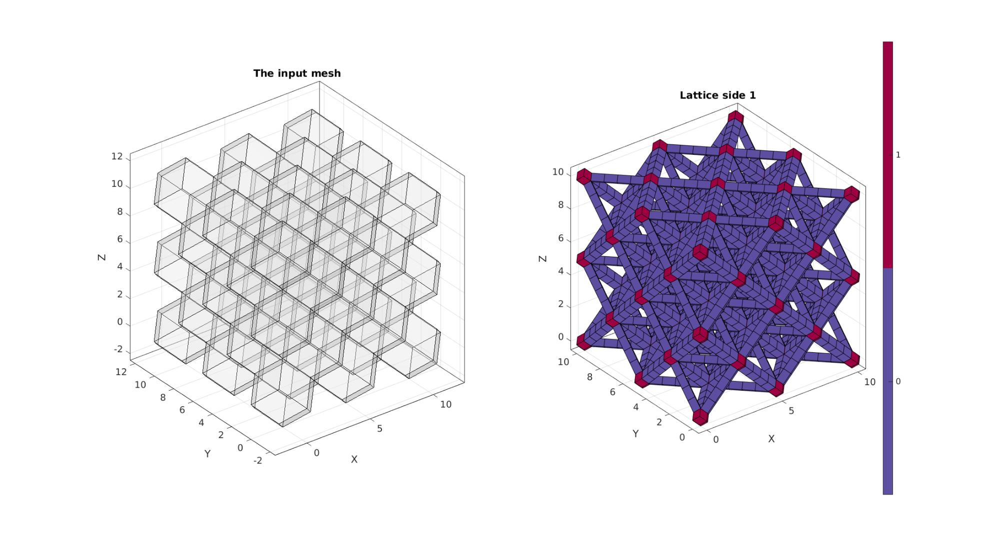
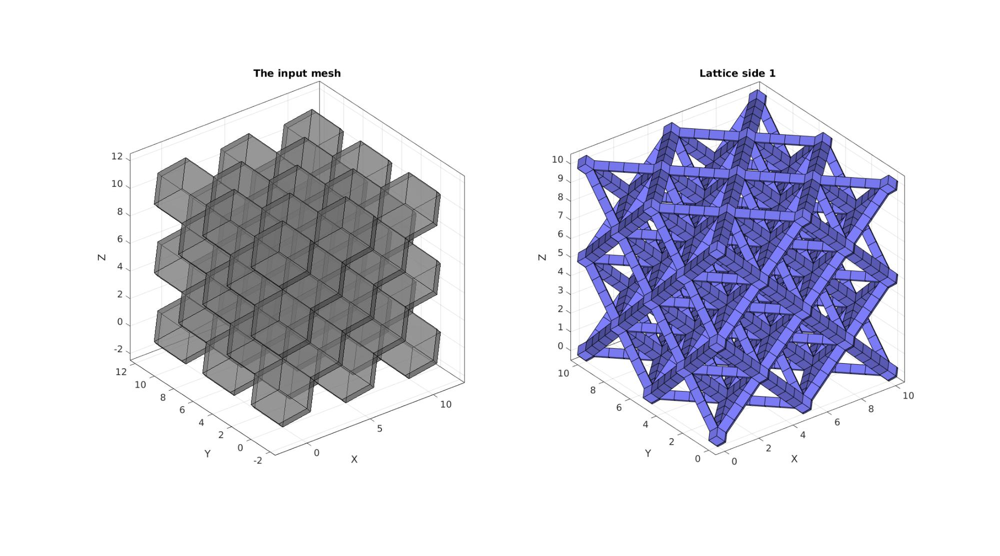
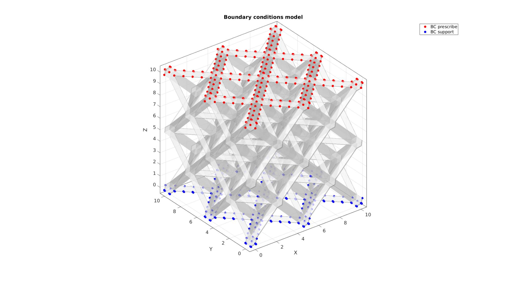
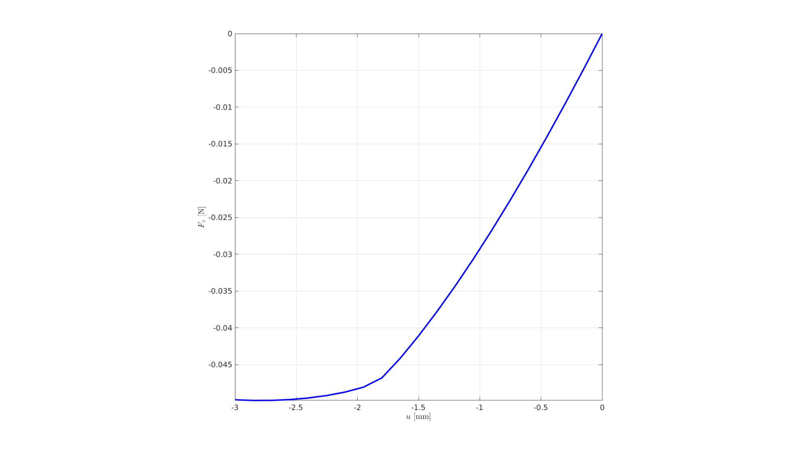
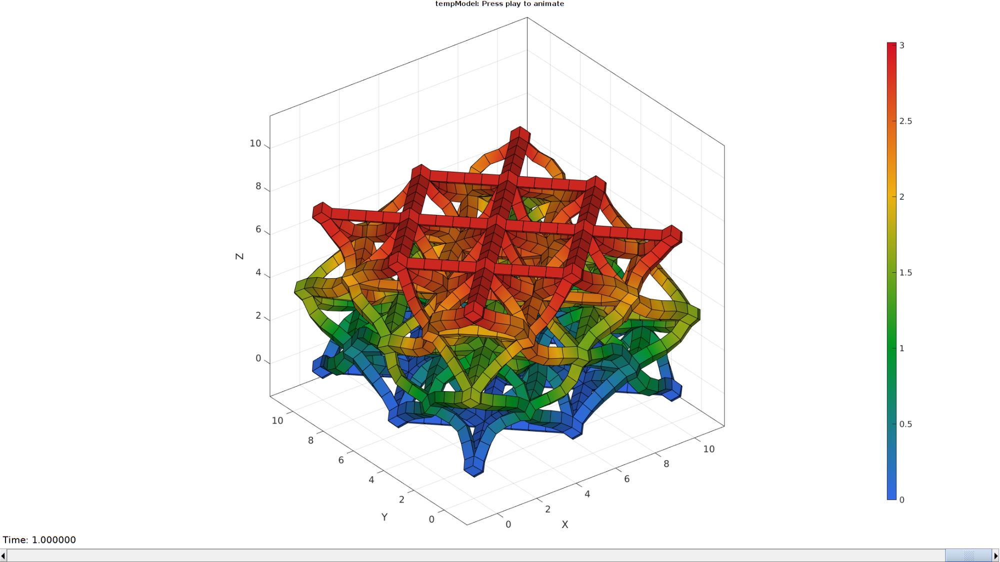

DEMO_febio_0037_lattice_test_octet_truss_01
Below is a demonstration for:
- Building the geometry for the octet truss lattive with hexahedral elements
- Defining the boundary conditions
- Coding the febio structure
- Running the model
- Importing and visualizing the displacement and stress results
Contents
Keywords
- febio_spec version 4.0
- febio, FEBio
- compression, tension, compressive, tensile
- displacement control, displacement boundary condition
- hexahedral elements, hex8
- cube, box, rectangular
- Lattice
- static, solid
- hyperelastic, Ogden
- displacement logfile
- stress logfile
clear; close all; clc;
Plot settings
Plot settings
fontSize=15; faceAlpha1=0.8; faceAlpha2=1; edgeColor=0.25*ones(1,3); edgeWidth=1.5; markerSize=25; markerSize2=25; cMap=gjet(4);
Control parameters
% Path names defaultFolder = fileparts(fileparts(mfilename('fullpath'))); savePath=fullfile(defaultFolder,'data','temp'); % Defining file names febioFebFileNamePart='tempModel'; febioFebFileName=fullfile(savePath,[febioFebFileNamePart,'.feb']); %FEB file name febioLogFileName=fullfile(savePath,[febioFebFileNamePart,'.txt']); %FEBio log file name febioLogFileName_disp=[febioFebFileNamePart,'_disp_out.txt']; %Log file name for exporting displacement febioLogFileName_force=[febioFebFileNamePart,'_force_out.txt']; %Log file name for exporting force febioLogFileName_stress=[febioFebFileNamePart,'_stress_out.txt']; %Log file name for exporting stress febioLogFileName_stiffness=[febioFebFileNamePart,'_stiffness_out.txt']; %Log file name for exporting stiffness %Specifying dimensions and number of elements sampleSize=10; latticeType=1; elementType='hex8'; %'hex8' strutThickness=0.5; %Define applied displacement appliedStrain=0.3; %Linear strain (Only used to compute applied stretch) loadingOption='compression'; % or 'tension' switch loadingOption case 'compression' stretchLoad=1-appliedStrain; %The applied stretch for uniaxial loading case 'tension' stretchLoad=1+appliedStrain; %The applied stretch for uniaxial loading end displacementMagnitude=(stretchLoad*sampleSize)-sampleSize; %The displacement magnitude %Material parameter set E_youngs1=0.1; %Material Young's modulus nu1=0.4; %Material Poisson's ratio % FEA control settings numTimeSteps=20; %Number of time steps desired max_refs=50; %Max reforms max_ups=0; %Set to zero to use full-Newton iterations opt_iter=15; %Optimum number of iterations max_retries=5; %Maximum number of retires dtmin=(1/numTimeSteps)/100; %Minimum time step size dtmax=(1/numTimeSteps); %Maximum time step size min_residual=1e-20; symmetric_stiffness=0; runMode='external'; %'internal' or 'external'
%Specifying dimensions and number of elements r=0.5; %Radii, results in a width of 1 n=3; nCopies=n*ones(1,3); %Number of offset copies d=2*r; %Diameter w=(n-1)*d; %sampleSize shrinkFactor=strutThickness./((sampleSize./n).*(sqrt(2)./2));
Create lattice
switch latticeType case 1 %Octet truss [E,V,C,F,CF]=rhombicDodecahedronMesh(r,nCopies); V=V./(n-1); V=V*sampleSize; [indBoundary]=tesBoundary(F); cPar.shrinkFactor=shrinkFactor; %Strut sides are formed by shrinking the input mesh faces by this factor cPar.meshType='hex'; %desired output mesh type cPar.indBoundary=indBoundary; %indices of the boundary faces cPar.hexSplit=1; cPar.latticeSide=2; %1=side 1 the edge lattice, 2=side 2 the dual lattice to the edge lattice [Es,Vs,Cs]=element2lattice(E,V,cPar); %Get lattice structure logicKeep1=~(Vs(:,1)<=-1e-3); logicKeep2=~(Vs(:,2)<=-1e-3); logicKeep3=~(Vs(:,3)<=-1e-3); logicKeep4=~(Vs(:,1)>=sampleSize+1e-3); logicKeep5=~(Vs(:,2)>=sampleSize+1e-3); logicKeep6=~(Vs(:,3)>=sampleSize+1e-3); logicKeepEs=sum(logicKeep1(Es),2)>=4 &... sum(logicKeep2(Es),2)>=4 &... sum(logicKeep3(Es),2)>=4 &... sum(logicKeep4(Es),2)>=4 &... sum(logicKeep5(Es),2)>=4 &... sum(logicKeep6(Es),2)>=4; Es=Es(logicKeepEs,:); Cs=Cs(logicKeepEs,:); % [Es,Vs,indFix]=patchCleanUnused(Es,Vs); % [Es,Vs,~,~]=subHex(Es,Vs,1,1); % Cs=repmat(Cs,8,1); % Create patch Data for visualization [Fs,CsF]=element2patch(Es,Cs); %Patch data for plotting %Get new boundary set indB=tesBoundary(Fs); Fb=Fs(indB,:); case 2 %Rhombic dodecahedron mesh ("dual" of octet truss lattice) [E,V,C,F,CF]=rhombicDodecahedronMesh(r,nCopies); V=V./(n-1); V=V*sampleSize; [indBoundary]=tesBoundary(F); cPar.shrinkFactor=0.15; %Strut sides are formed by shrinking the input mesh faces by this factor cPar.meshType='hex'; %desired output mesh type cPar.indBoundary=indBoundary; %indices of the boundary faces cPar.hexSplit=3; cPar.latticeSide=1; %1=side 1 the edge lattice, 2=side 2 the dual lattice to the edge lattice [Es,Vs,Cs]=element2lattice(E,V,cPar); %Get lattice structure logicKeep1=~(Vs(:,1)<=-1e-3); logicKeep2=~(Vs(:,2)<=-1e-3); logicKeep3=~(Vs(:,3)<=-1e-3); logicKeep4=~(Vs(:,1)>=sampleSize+1e-3); logicKeep5=~(Vs(:,2)>=sampleSize+1e-3); logicKeep6=~(Vs(:,3)>=sampleSize+1e-3); logicKeepEs=sum(logicKeep1(Es),2)>=4 &... sum(logicKeep2(Es),2)>=4 &... sum(logicKeep3(Es),2)>=4 &... sum(logicKeep4(Es),2)>=4 &... sum(logicKeep5(Es),2)>=4 &... sum(logicKeep6(Es),2)>=4; Es=Es(logicKeepEs,:); Cs=Cs(logicKeepEs,:); [Es,Vs,indFix]=patchCleanUnused(Es,Vs); % Create patch Data for visualization [Fs,CsF]=element2patch(Es,Cs); %Patch data for plotting %Get new boundary set indB=tesBoundary(Fs); Fb=Fs(indB,:); end if strcmp(elementType,'hex20') [Es,Vs,~,Fb]=hex8_hex20(Es,Vs,{},Fb); end
Visualizing input mesh and lattic structures
cFigure; hs=subplot(1,2,1); hold on; title('The input mesh','fontSize',fontSize) gpatch(F,V,'w','k',0.25); axisGeom(gca,fontSize); camlight headlight; % Fst=[Fs(:,[1 2 3]); Fs(:,[3 4 1]);]; % indB=tesBoundary(Fst,Vs); % Fbt=Fst(indB,:); subplot(1,2,2); hold on; title('Lattice side 1','fontSize',fontSize) % gpatch(F,V,'w','k',0.25); % logicKeep=~ismember(CsF,[1 2 3 4]); % gpatch(Fs(logicKeep,:),Vs,CsF(logicKeep),'k',1); gpatch(Fs,Vs,CsF,'k',1); % plotV(Vs(Fb(:),:),'r.'); % patchNormPlot(Fs,Vs); axisGeom(gca,fontSize); % camlight headlight; lighting flat; colormap spectral; icolorbar drawnow;
DEFINE BC's
% Define node set logics
indAll=(1:1:size(Vs,1))';
logicBoundary=ismember(indAll,Fb);
Z=Vs(:,3);
logicTop=Z>=(sampleSize-eps(sampleSize))& logicBoundary;
logicBottom=Z<=eps(sampleSize) & logicBoundary;
X=Vs(:,1);
logicSide1=X>=(sampleSize-eps(sampleSize))& logicBoundary;
logicSide2=X<=eps(sampleSize)& logicBoundary;
Y=Vs(:,2);
logicSide3=Y>=(sampleSize-eps(sampleSize))& logicBoundary;
logicSide4=Y<=eps(sampleSize)& logicBoundary;
bcPrescribeListCell{1}=find(logicSide1)';
bcPrescribeListCell{2}=find(logicSide2)';
bcPrescribeListCell{3}=find(logicSide3)';
bcPrescribeListCell{4}=find(logicSide4)';
bcPrescribeListCell{5}=find(logicTop)';
bcPrescribeListCell{6}=find(logicBottom)';
Smoothing lattice
% indKeep=unique([bcPrescribeListCell{:}]); % [Fb_clean,Vb_clean,indFix]=patchCleanUnused(Fb,Vs); % % cPar.Method='HC'; % cPar.n=6; % % cPar.RigidConstraints=indFix(indKeep); % % cPar.RigidConstraints=cPar.RigidConstraints(cPar.RigidConstraints>0); % % [Vb_clean]=tesSmooth(Fb_clean,Vb_clean,[],cPar); % ind=Fb(:); % ind=unique(ind(:)); % Vs(ind,:)=Vb_clean; % cFigure; hold on; % gpatch(Fb,Vs,'bw','k',1); % % patchNormPlot(Fs,Vs); % % plotV(Vs(indKeep,:),'k.','MarkerSize',25) % axisGeom(gca,fontSize); % camlight headlight; lighting flat; % drawnow;
%Prescribed displacement nodes
bcPrescribeList=find(logicTop);
bcSupportList=find(logicBottom);
Visualizing input mesh and lattice structures
cFigure; hs=subplot(1,2,1); title('The input mesh','fontSize',fontSize) hold on; gpatch(F,V,0.5*ones(1,3),'k',0.5); axisGeom(gca,fontSize); camlight headlight; lighting flat; subplot(1,2,2); title('Lattice side 1','fontSize',fontSize) hold on; gpatch(Fb,Vs,'bw'); % patchNormPlot(Fs,Vs); axisGeom(gca,fontSize); camlight headlight; lighting flat; drawnow;
Visualize BC's
hf=cFigure; hold on; title('Boundary conditions model','FontSize',fontSize); gpatch(Fb,Vs,'w','none',0.5); hl2(1)=plotV(Vs(bcPrescribeList,:),'r.','MarkerSize',markerSize2); hl2(2)=plotV(Vs(bcSupportList,:),'b.','MarkerSize',markerSize2); legend(hl2,{'BC prescribe','BC support'}); axisGeom(gca,fontSize); camlight headlight; drawnow;
Check porosity
Note it may be better to use the convex hull volume rather than the cube for the octet truss
vol_lattice=sum(hexVol(Es,Vs)); %Volume of hexahedra porosity_lattice=vol_lattice./sampleSize.^3; %Porosity
Defining the FEBio input structure
See also febioStructTemplate and febioStruct2xml and the FEBio user manual.
%Get a template with default settings [febio_spec]=febioStructTemplate; %febio_spec version febio_spec.ATTR.version='4.0'; %Module section febio_spec.Module.ATTR.type='solid'; %Control section febio_spec.Control.analysis='STATIC'; febio_spec.Control.time_steps=numTimeSteps; febio_spec.Control.step_size=1/numTimeSteps; febio_spec.Control.solver.max_refs=max_refs; febio_spec.Control.solver.qn_method.max_ups=max_ups; febio_spec.Control.time_stepper.dtmin=dtmin; febio_spec.Control.time_stepper.dtmax=dtmax; febio_spec.Control.time_stepper.max_retries=max_retries; febio_spec.Control.time_stepper.opt_iter=opt_iter; %Material section materialName1='Material1'; febio_spec.Material.material{1}.ATTR.name=materialName1; febio_spec.Material.material{1}.ATTR.type='neo-Hookean'; febio_spec.Material.material{1}.ATTR.id=1; febio_spec.Material.material{1}.E=E_youngs1; febio_spec.Material.material{1}.v=nu1; %Mesh section % -> Nodes febio_spec.Mesh.Nodes{1}.ATTR.name='nodeSet_all'; %The node set name febio_spec.Mesh.Nodes{1}.node.ATTR.id=(1:size(Vs,1))'; %The node id's febio_spec.Mesh.Nodes{1}.node.VAL=Vs; %The nodel coordinates % -> Elements partName1='Part1'; febio_spec.Mesh.Elements{1}.ATTR.name=partName1; %Name of this part febio_spec.Mesh.Elements{1}.ATTR.type=elementType; %Element type febio_spec.Mesh.Elements{1}.elem.ATTR.id=(1:1:size(Es,1))'; %Element id's febio_spec.Mesh.Elements{1}.elem.VAL=Es; %The element matrix % -> NodeSets nodeSetName1='bcSupportList'; febio_spec.Mesh.NodeSet{1}.ATTR.name=nodeSetName1; febio_spec.Mesh.NodeSet{1}.VAL=mrow(bcSupportList); nodeSetName2='bcPrescribeList'; febio_spec.Mesh.NodeSet{2}.ATTR.name=nodeSetName2; febio_spec.Mesh.NodeSet{2}.VAL=mrow(bcPrescribeList); %MeshDomains section febio_spec.MeshDomains.SolidDomain.ATTR.name=partName1; febio_spec.MeshDomains.SolidDomain.ATTR.mat=materialName1; %Boundary condition section % -> Fix boundary conditions febio_spec.Boundary.bc{1}.ATTR.name='FixedDisplacement01'; febio_spec.Boundary.bc{1}.ATTR.type='zero displacement'; febio_spec.Boundary.bc{1}.ATTR.node_set=nodeSetName1; febio_spec.Boundary.bc{1}.x_dof=1; febio_spec.Boundary.bc{1}.y_dof=1; febio_spec.Boundary.bc{1}.z_dof=1; febio_spec.Boundary.bc{2}.ATTR.name='FixedDisplacement02'; febio_spec.Boundary.bc{2}.ATTR.type='zero displacement'; febio_spec.Boundary.bc{2}.ATTR.node_set=nodeSetName2; febio_spec.Boundary.bc{2}.x_dof=1; febio_spec.Boundary.bc{2}.y_dof=1; febio_spec.Boundary.bc{2}.z_dof=0; % -> Prescribed boundary conditions febio_spec.Boundary.bc{3}.ATTR.name='bcPrescribeList'; febio_spec.Boundary.bc{3}.ATTR.type='prescribed displacement'; febio_spec.Boundary.bc{3}.ATTR.node_set=nodeSetName2; febio_spec.Boundary.bc{3}.dof='z'; febio_spec.Boundary.bc{3}.value.ATTR.lc=1; febio_spec.Boundary.bc{3}.value.VAL=displacementMagnitude; febio_spec.Boundary.bc{3}.relative=0; %LoadData section % -> load_controller febio_spec.LoadData.load_controller{1}.ATTR.name='LC_1'; febio_spec.LoadData.load_controller{1}.ATTR.id=1; febio_spec.LoadData.load_controller{1}.ATTR.type='loadcurve'; febio_spec.LoadData.load_controller{1}.interpolate='LINEAR'; %febio_spec.LoadData.load_controller{1}.extend='CONSTANT'; febio_spec.LoadData.load_controller{1}.points.pt.VAL=[0 0; 1 1]; %Output section % -> log file febio_spec.Output.logfile.ATTR.file=febioLogFileName; febio_spec.Output.logfile.node_data{1}.ATTR.file=febioLogFileName_disp; febio_spec.Output.logfile.node_data{1}.ATTR.data='ux;uy;uz'; febio_spec.Output.logfile.node_data{1}.ATTR.delim=','; febio_spec.Output.logfile.node_data{2}.ATTR.file=febioLogFileName_force; febio_spec.Output.logfile.node_data{2}.ATTR.data='Rx;Ry;Rz'; febio_spec.Output.logfile.node_data{2}.ATTR.delim=','; febio_spec.Output.logfile.element_data{1}.ATTR.file=febioLogFileName_stress; febio_spec.Output.logfile.element_data{1}.ATTR.data='s1;s2;s3'; febio_spec.Output.logfile.element_data{1}.ATTR.delim=','; % Plotfile section febio_spec.Output.plotfile.compression=0;
Quick viewing of the FEBio input file structure
The febView function can be used to view the xml structure in a MATLAB figure window.
febView(febio_spec); %Viewing the febio file
Exporting the FEBio input file
Exporting the febio_spec structure to an FEBio input file is done using the febioStruct2xml function.
febioStruct2xml(febio_spec,febioFebFileName); %Exporting to file and domNode
Running the FEBio analysis
To run the analysis defined by the created FEBio input file the runMonitorFEBio function is used. The input for this function is a structure defining job settings e.g. the FEBio input file name. The optional output runFlag informs the user if the analysis was run succesfully.
febioAnalysis.run_filename=febioFebFileName; %The input file name febioAnalysis.run_logname=febioLogFileName; %The name for the log file febioAnalysis.disp_on=1; %Display information on the command window febioAnalysis.runMode=runMode; %Run in external or in matlab terminal [runFlag]=runMonitorFEBio(febioAnalysis);%START FEBio NOW!!!!!!!!
%%%%%%%%%%%%%%%%%%%%%%%%%%%%%%%%%%%%%%%%%%%%%%%%%%%%%%%%%%%%%%%%%%%%%%%%%%%
--------> RUNNING/MONITORING FEBIO JOB <-------- 20-Apr-2023 18:03:10
FEBio path: /home/kevin/FEBioStudio2/bin/febio4
# Attempt removal of existing log files 20-Apr-2023 18:03:10
* Removal succesful 20-Apr-2023 18:03:10
# Attempt removal of existing .xplt files 20-Apr-2023 18:03:10
* Removal succesful 20-Apr-2023 18:03:10
# Starting FEBio... 20-Apr-2023 18:03:10
Max. total analysis time is: Inf s
* Waiting for log file creation 20-Apr-2023 18:03:10
Max. wait time: 30 s
* Log file found. 20-Apr-2023 18:03:10
# Parsing log file... 20-Apr-2023 18:03:10
number of iterations : 3 20-Apr-2023 18:03:11
number of reformations : 3 20-Apr-2023 18:03:11
------- converged at time : 0.05 20-Apr-2023 18:03:11
number of iterations : 3 20-Apr-2023 18:03:11
number of reformations : 3 20-Apr-2023 18:03:11
------- converged at time : 0.1 20-Apr-2023 18:03:11
number of iterations : 3 20-Apr-2023 18:03:11
number of reformations : 3 20-Apr-2023 18:03:11
------- converged at time : 0.15 20-Apr-2023 18:03:11
number of iterations : 3 20-Apr-2023 18:03:11
number of reformations : 3 20-Apr-2023 18:03:11
------- converged at time : 0.2 20-Apr-2023 18:03:11
number of iterations : 3 20-Apr-2023 18:03:12
number of reformations : 3 20-Apr-2023 18:03:12
------- converged at time : 0.25 20-Apr-2023 18:03:12
number of iterations : 3 20-Apr-2023 18:03:12
number of reformations : 3 20-Apr-2023 18:03:12
------- converged at time : 0.3 20-Apr-2023 18:03:12
number of iterations : 3 20-Apr-2023 18:03:12
number of reformations : 3 20-Apr-2023 18:03:12
------- converged at time : 0.35 20-Apr-2023 18:03:12
number of iterations : 3 20-Apr-2023 18:03:12
number of reformations : 3 20-Apr-2023 18:03:12
------- converged at time : 0.4 20-Apr-2023 18:03:12
number of iterations : 3 20-Apr-2023 18:03:12
number of reformations : 3 20-Apr-2023 18:03:12
------- converged at time : 0.45 20-Apr-2023 18:03:12
number of iterations : 3 20-Apr-2023 18:03:13
number of reformations : 3 20-Apr-2023 18:03:13
------- converged at time : 0.5 20-Apr-2023 18:03:13
number of iterations : 4 20-Apr-2023 18:03:13
number of reformations : 4 20-Apr-2023 18:03:13
------- converged at time : 0.55 20-Apr-2023 18:03:13
number of iterations : 5 20-Apr-2023 18:03:13
number of reformations : 5 20-Apr-2023 18:03:13
------- converged at time : 0.6 20-Apr-2023 18:03:13
number of iterations : 6 20-Apr-2023 18:03:14
number of reformations : 6 20-Apr-2023 18:03:14
------- converged at time : 0.65 20-Apr-2023 18:03:14
number of iterations : 5 20-Apr-2023 18:03:14
number of reformations : 5 20-Apr-2023 18:03:14
------- converged at time : 0.7 20-Apr-2023 18:03:14
number of iterations : 4 20-Apr-2023 18:03:14
number of reformations : 4 20-Apr-2023 18:03:14
------- converged at time : 0.75 20-Apr-2023 18:03:14
number of iterations : 4 20-Apr-2023 18:03:14
number of reformations : 4 20-Apr-2023 18:03:14
------- converged at time : 0.8 20-Apr-2023 18:03:14
number of iterations : 4 20-Apr-2023 18:03:15
number of reformations : 4 20-Apr-2023 18:03:15
------- converged at time : 0.85 20-Apr-2023 18:03:15
number of iterations : 4 20-Apr-2023 18:03:15
number of reformations : 4 20-Apr-2023 18:03:15
------- converged at time : 0.9 20-Apr-2023 18:03:15
number of iterations : 4 20-Apr-2023 18:03:15
number of reformations : 4 20-Apr-2023 18:03:15
------- converged at time : 0.95 20-Apr-2023 18:03:15
number of iterations : 4 20-Apr-2023 18:03:15
number of reformations : 4 20-Apr-2023 18:03:15
------- converged at time : 1 20-Apr-2023 18:03:15
Elapsed time : 0:00:05 20-Apr-2023 18:03:16
N O R M A L T E R M I N A T I O N
# Done 20-Apr-2023 18:03:16
%%%%%%%%%%%%%%%%%%%%%%%%%%%%%%%%%%%%%%%%%%%%%%%%%%%%%%%%%%%%%%%%%%%%%%%%%%%
Import FEBio results
if runFlag==1 %i.e. a succesful run
% Importing nodal displacements from a log file [timeVec, N_disp_mat,~]=importFEBio_logfile(fullfile(savePath,febioLogFileName_disp)); %Nodal displacements timeVec=[0; timeVec(:)]; %Time N_disp_mat=N_disp_mat(:,2:end,:); sizImport=size(N_disp_mat); sizImport(3)=sizImport(3)+1; N_disp_mat_n=zeros(sizImport); N_disp_mat_n(:,:,2:end)=N_disp_mat; N_disp_mat=N_disp_mat_n; DN=N_disp_mat(:,:,end); DN_magnitude=sqrt(sum(DN(:,3).^2,2)); Vs_def=Vs+DN;
Importing nodal forces from a log file
[dataStruct]=importFEBio_logfile(fullfile(savePath,febioLogFileName_force),0,1); %Nodal forces %Access data timeVec=dataStruct.time; f_sum_x=squeeze(sum(dataStruct.data(bcPrescribeList,1,:),1)); f_sum_y=squeeze(sum(dataStruct.data(bcPrescribeList,2,:),1)); f_sum_z=squeeze(sum(dataStruct.data(bcPrescribeList,3,:),1));
Visualize force data
displacementApplied=timeVec.*displacementMagnitude;
cFigure; hold on;
xlabel('$u$ [mm]','Interpreter','Latex');
ylabel('$F_z$ [N]','Interpreter','Latex');
hp=plot(displacementApplied(:),f_sum_z(:),'b-','LineWidth',3);
grid on; box on; axis square; axis tight;
set(gca,'FontSize',fontSize);
drawnow;
 Plotting the simulated results using anim8 to visualize and animate deformations
% Create basic view and store graphics handle to initiate animation hf=cFigure; %Open figure gtitle([febioFebFileNamePart,': Press play to animate']); hp=gpatch(Fb,Vs_def,DN_magnitude,'k',1); %Add graphics object to animate % gpatch(Fb,Vs,'kw','none',0.25); %A static graphics object hp.FaceColor='interp'; axisGeom(gca,fontSize); colormap(gjet(250)); colorbar; clim([0 max(DN_magnitude)]); axis([min([Vs_def(:,1);Vs(:,1)]) max([Vs_def(:,1);Vs(:,1)])... min([Vs_def(:,2);Vs(:,2)]) max([Vs_def(:,2);Vs(:,2)])... min([Vs_def(:,3);Vs(:,3)]) max([Vs_def(:,3);Vs(:,3)]) ]); %Set axis limits statically % view(130,25); %Set view direction camlight headlight; % Set up animation features animStruct.Time=timeVec; %The time vector for qt=1:1:size(N_disp_mat,3) %Loop over time increments DN=N_disp_mat(:,:,qt); %Current displacement DN_magnitude=sqrt(sum(DN.^2,2)); %Current displacement magnitude Vs_def=Vs+DN; %Current nodal coordinates %Set entries in animation structure animStruct.Handles{qt}=[hp hp]; %Handles of objects to animate animStruct.Props{qt}={'Vertices','CData'}; %Properties of objects to animate animStruct.Set{qt}={Vs_def,DN_magnitude}; %Property values for to set in order to animate end anim8(hf,animStruct); %Initiate animation feature drawnow;
end

GIBBON www.gibboncode.org
Kevin Mattheus Moerman, gibbon.toolbox@gmail.com
GIBBON footer text
License: https://github.com/gibbonCode/GIBBON/blob/master/LICENSE
GIBBON: The Geometry and Image-based Bioengineering add-On. A toolbox for image segmentation, image-based modeling, meshing, and finite element analysis.
Copyright (C) 2006-2022 Kevin Mattheus Moerman and the GIBBON contributors
This program is free software: you can redistribute it and/or modify it under the terms of the GNU General Public License as published by the Free Software Foundation, either version 3 of the License, or (at your option) any later version.
This program is distributed in the hope that it will be useful, but WITHOUT ANY WARRANTY; without even the implied warranty of MERCHANTABILITY or FITNESS FOR A PARTICULAR PURPOSE. See the GNU General Public License for more details.
You should have received a copy of the GNU General Public License along with this program. If not, see http://www.gnu.org/licenses/.